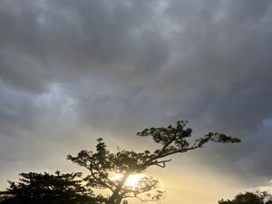
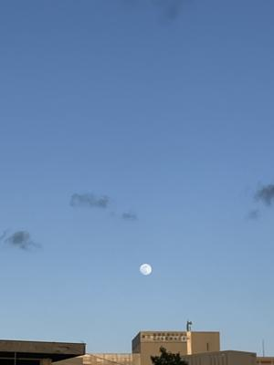
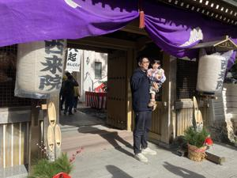
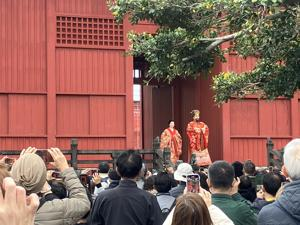

うるがいの話 ある日
最新: 初もうで【うるがいの話 ある日】とは 一日だけのプログです
『うるがいの話』の最新一日だけのプログで、通信料が少なく経済的だ。カニの画像をクリックすると全ての日付が載る『うるがいの話』サイトを表示します
|
|
【うるがいの話】 うるがい(ｳﾙｶﾞｲ urugai)とは、『もずくがに』の名前でとても大きくなります。 |
|---|---|
|
|
【カミマヤーの話】 猫のことを方言でマヤーといいます。カミマヤー（kamimayaa）とは、神の猫のことです。 |
|
【たながぁの音楽】 たながぁ（ﾀﾅｶﾞｰ tanagaa）とは手長えびのことで、何種類かあり大きいのは車 エビぐらいになります。 |

|
【ぶながぁの話】 ぶながぁ(ﾌﾞﾅｶﾞｰ bunagaa)とは、赤い髪の毛、赤い身体、そして身長は１ｍ２０ｃｍ ぐらい、川の蟹を食べているの目撃された。場所は沖縄県国頭郡大宜味村のと ある村僕の隣近所に住んでいる爺さんから、聞いた話です。 |
|
|
【ギーマの話】 ギーマ(giima)とは、山原の里山に咲くスズランに似た、 花を付けます。実は食べられます、 気が付くと口の周りが紫になっています。 |
2026年01月03日 (土）初もうで
16:41
 
昨日のジョギングで、東の青空にクッキリと浮かぶ満月を見まし
た。
達磨寺へ初もうでに行きました。大勢の人で混んでました。百円
のおみくじを引きました、去年と同じ末吉でした。

ついでに、首里城へも行きました。以前は、正月の新春の宴は有
料でない場所で行われましたが。せっかくなので３２０円支払っ
て入場しようと思ったが、既に入場を待つ大勢の人の行列をみて
諦めました。たまたま国王・王妃の出御ってのにタイミングがあ
いました。

ヨメが、年賀はがきのお返しをするためハガキを生協で購入しよ
うとしたところ、３枚８８０円！、絵柄はごちゃごちゃしていた
ので買わず、その後、近くの文具店へ私がお使いに行かされまし
た。ついでに私も、毎年身内の個人情報を報告するヤマカワ夫婦
に年賀状を出しました。
お二人とも元気そうでなりよりです
昨年から、介護から解放されました。
なんか、メールの返信みたいですね、それにしても年賀状高いっ
す。